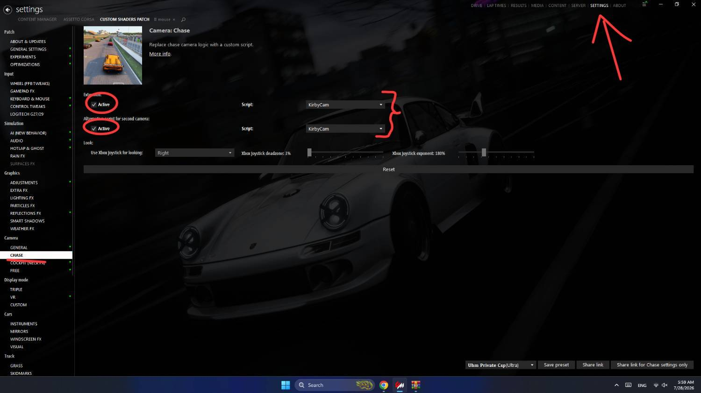
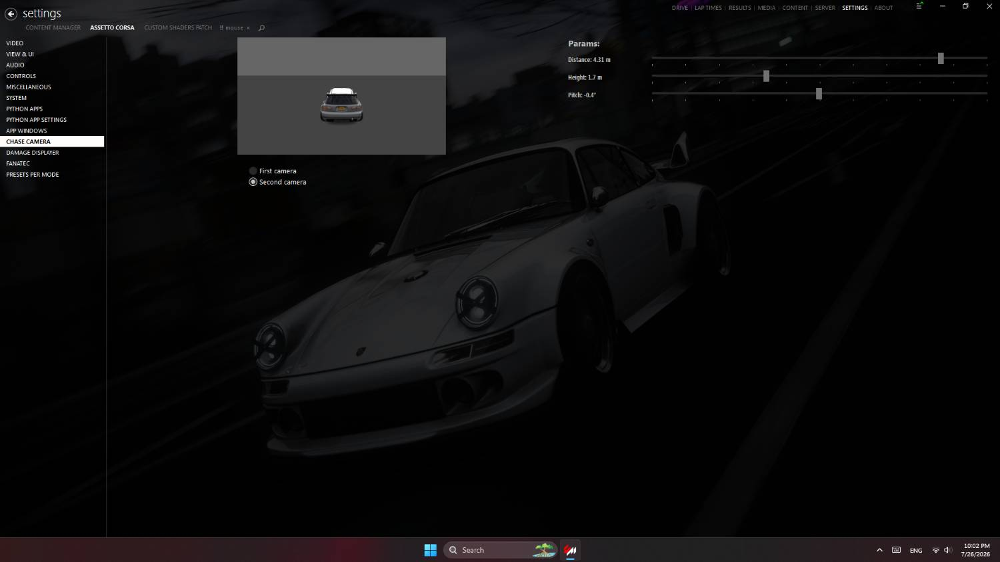

5 · Chaser Camera
نصب Chaser Camera
فایل دوربین را کپی کنید، KirbyCam را Active کنید، و زاویه First / Second camera را تنظیم کنید.
-
1
کپی فایل Chaser Camera
فایل Chaser Camera را در مسیر زیر کپی کنید:
...\SteamLibrary\steamapps\common\assettocorsa\extension\lua\chaser-cameraپوشه chaser-camera داخل extension\lua بازی است.
-
2
فعالسازی KirbyCam در CSP
وارد Content Manager شوید و مسیر زیر را باز کنید:
SETTINGS → Custom Shaders Patch → CHASE
تیک Active را برای Extension و second camera روشن کنید و Script هر دو را روی KirbyCam بگذارید.
⚠ مهم اگر Script روی KirbyCam نباشد، دوربین پک درست کار نمیکند.
CSP → CHASE → KirbyCam Active روشن + Script = KirbyCam برای هر دو دوربین -
3
زاویه دوربین سومشخص
برای تنظیم زاویه این مسیر را باز کنید:
SETTINGS → Assetto Corsa → Chase Camera
دو زاویه دارید: First camera و Second camera.
First camera زاویه نزدیکتر — نمونه: Distance 3.35m · Height 1.1m · Pitch -1.6° 
Second camera زاویه دورتر — نمونه: Distance 4.31m · Height 1.7m · Pitch -0.4°